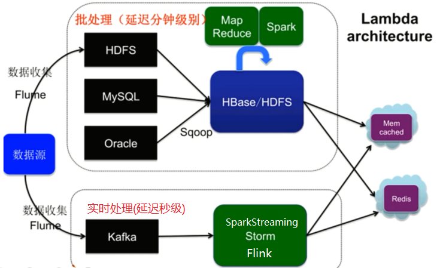

1.2 推荐系统设计
学习目标
- 了解推荐系统要素
- 记忆推荐系统架构
1 推荐系统要素
- UI 和 UE(前端界面)
- 数据 (Lambda架构)
- 业务知识
- 算法
2 推荐系统架构
推荐系统整体架构

大数据Lambda架构
Lambda架构是由实时大数据处理框架Storm的作者Nathan Marz提出的一个实时大数据处理框架。
Lambda架构的将离线计算和实时计算整合，设计出一个能满足实时大数据系统关键特性的架构，包括有：高容错、低延时和可扩展等。
分层架构
- 批处理层
- 数据不可变, 可进行任何计算, 可水平扩展
- 高延迟 几分钟~几小时(计算量和数据量不同)
- 日志收集： Flume
- 分布式存储： Hadoop
- 分布式计算： Hadoop、Spark
- 视图存储数据库
- nosql(HBase/Cassandra)
- Redis/memcache
- MySQL
- 实时处理层
- 流式处理, 持续计算
- 存储和分析某个窗口期内的数据（一段时间的热销排行，实时热搜等）
- 实时数据收集 flume & kafka
- 实时数据分析 spark streaming/storm/flink
- 服务层
- 支持随机读
- 需要在非常短的时间内返回结果
- 读取批处理层和实时处理层结果并对其归并
- 批处理层
Lambda架构图

推荐算法架构
- 召回阶段 (海选)
- 召回决定了最终推荐结果的天花板
- 常用算法:
- 协同过滤
- 基于内容
- 排序阶段 （精选）
- 召回决定了最终推荐结果的天花板, 排序逼近这个极限, 决定了最终的推荐效果
- CTR预估 (点击率预估 使用LR算法) 估计用户是否会点击某个商品 需要用户的点击数据
- 策略调整
- 召回阶段 (海选)

推荐系统的整体架构